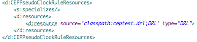
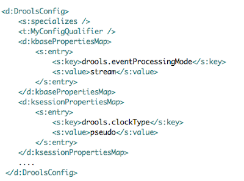
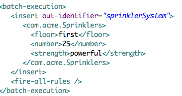

Seam 3 Drools Integration – First Review
As we are nearing an Alpha release of the Seam 3 Drools module I wanted to give an overview of what we are working on. Drools integration in Seam 3 is a portable extensions to CDI/Weld. Some of the main focus points of the integration are:
- Strong integration will all features of Drools 5
- Simple yet powerful configuration and ease of use
- Enhanced integration of Drools with rich Internet applications based upon the Java EE environment
If you are not yet familiar with Seam 3 I would definitely encourage you to get on the bandwagon. Great places to get information are seamframework.org as well as Pete Muir’s blog.
So let’s get started!
The starting point of the integration is the XML configuration in beans.xml. Out-of-the box Seam 3 provides some “most commonly used” configuration templates, for example:  
So let’s say in our ceptest.drl we define a rule where facts can come from two different streams, namely “FireDetection” and “SprinklerDetection”. Right off the bat we can inject those into our beans:
@Inject @CEPPseudoClockConfig @EntryPoint("FireDetection") WorkingMemoryEntryPoint fds;
@Inject @CEPPseudoClockConfig @EntryPoint("SprinklerDetection") WorkingMemoryEntryPoint sds;
and use them in methods, for example:
public void fireDetected() { fds.insert(new FireDetected()); }
So in case of a fire let’s say we need to produce a quick evacuation report and want to see how many of our employees are/were affected by it:
@Inject void EvacuationReport(@CEPPseudoClockConfig @Query("employees affected") QueryResults qr) { ... }
Here what we are doing is passing our QueryResults as parameter to the constructor of the EvacuationReport class, and there is no additional configuration required! As long as we have the “employeed affected” query in our rules we can inject it’s QueryResults.
But that’s not all, let say that our Sprinkler system is controller some service which produces batch execution XML, for example:

@Produces @FirstFloor
public Sprinklers getSprinklerSystem(@CEPPseudoClockConfig @Stateful ExecutionResults er) {
return (Sprinklers) er.getValue("sprinklerSystem");
}
Now let’s say that our evacuation procedures are controlled by a Rule Flow process. We can control this process from our application with a set of new annotations, for example:
@StartProcess(process="buildingEvac", fire=true)
@CEPPseudoClockConfig
public void evacuateBuilding() {
...
}
@SignalEvent(type="evacuateFloor")
@CEPPseudoClockConfig
public String evacuateFirstFloor() {
return "first";
}
@AbortProcess(process="buildingEvac")
@CEPPseudoClockConfig
public void falseAlarm() {
...
}
That’s it for now. I hope to have sparked some questions and interest. Please note that the code shown here is not set in stone yet and is subject to some changes as we are progressing to the Alpha release.

{kind=link}
{kind=link}
{kind=link}